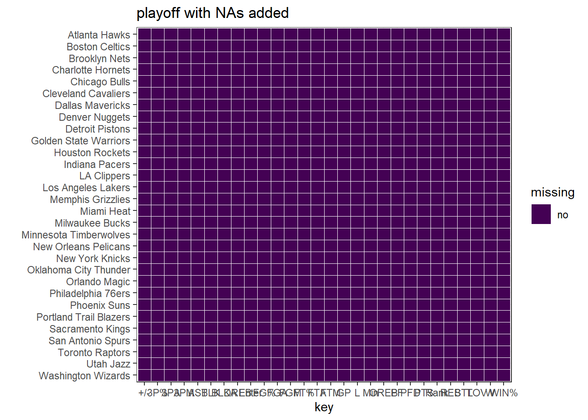
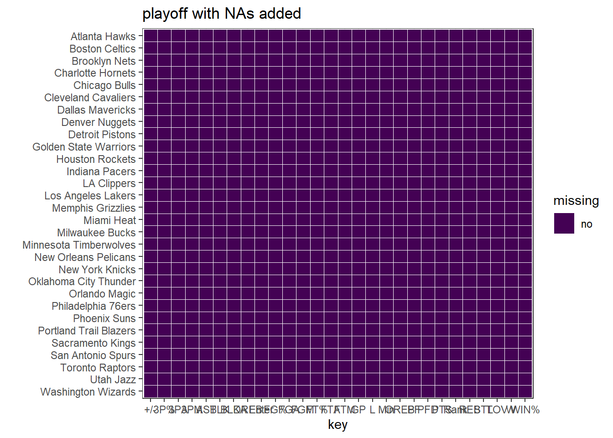
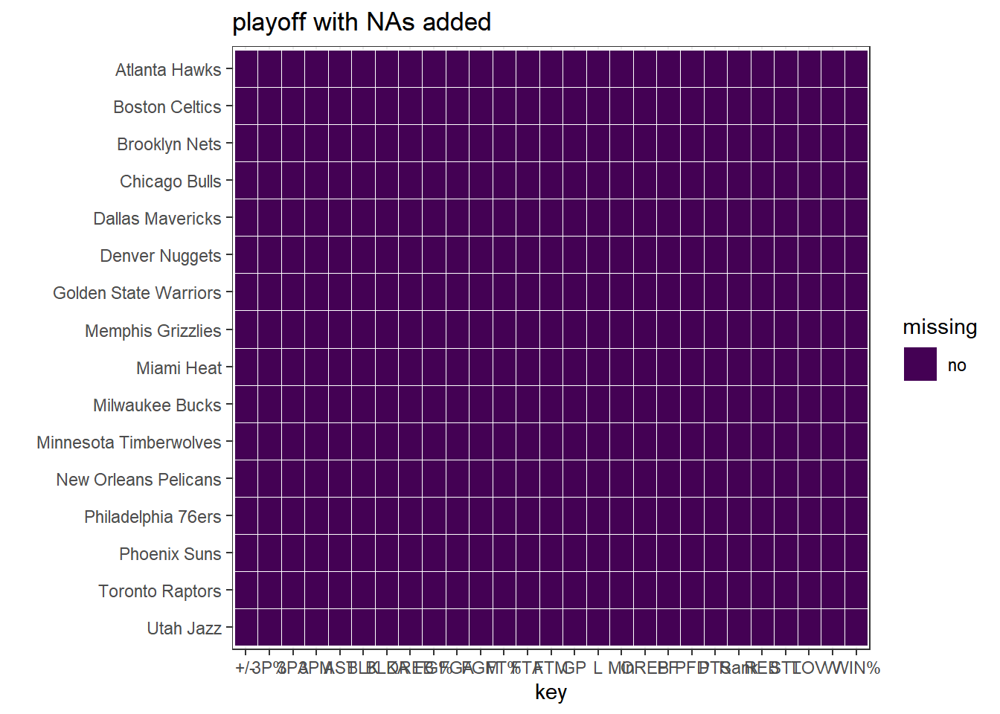

Chapter 3 Data
3.1 Sources
The data used in this analysis is collected and published on the NBA official website, the following links direct to the raw data.
|==> Data of 2021-2022 regular season: *regular season
|==> Data of 2021-2022 playoff: *playoff
|==> Data of Final Champions: *final champion
3.2 Cleaning / transformation
First of all, we will load the data for preprocessing.
## # A tibble: 6 × 28
## `` Team GP W L `WIN%` Min PTS FGM FGA `FG%` `3PM` `3PA`
## <int> <chr> <int> <int> <int> <dbl> <dbl> <dbl> <dbl> <dbl> <dbl> <dbl> <dbl>
## 1 1 Phoe… 82 64 18 0.78 48.1 115. 43.7 90.1 48.5 11.6 31.9
## 2 2 Memp… 82 56 26 0.683 48.2 116. 43.5 94.4 46.1 11.5 32.7
## 3 3 Gold… 82 53 29 0.646 48.1 111 40.5 86.4 46.9 14.3 39.4
## 4 3 Miam… 82 53 29 0.646 48.4 110 39.6 84.8 46.7 13.6 35.8
## 5 5 Dall… 82 52 30 0.634 48.2 108 39.3 85.1 46.1 13.1 37.4
## 6 6 Bost… 82 51 31 0.622 48.5 112. 40.7 87.4 46.6 13.2 37.1
## # … with 15 more variables: `3P%` <dbl>, FTM <dbl>, FTA <dbl>, `FT%` <dbl>,
## # OREB <dbl>, DREB <dbl>, REB <dbl>, AST <dbl>, TOV <dbl>, STL <dbl>,
## # BLK <dbl>, BLKA <dbl>, PF <dbl>, PFD <dbl>, `+/-` <dbl>## # A tibble: 6 × 28
## `` Team GP W L `WIN%` Min PTS FGM FGA `FG%` `3PM` `3PA`
## <int> <chr> <int> <int> <int> <dbl> <dbl> <dbl> <dbl> <dbl> <dbl> <dbl> <dbl>
## 1 1 Gold… 22 16 6 0.727 48 112. 41.4 86.1 48 14 37.3
## 2 2 Miam… 18 11 7 0.611 48 104. 38 85.3 44.5 10.9 34.8
## 3 3 Bost… 24 14 10 0.583 48 106. 36.7 81.8 44.9 13.7 36.6
## 4 3 Milw… 12 7 5 0.583 48 103. 38.5 88 43.8 10.6 32.3
## 5 5 Phoe… 13 7 6 0.538 48 108. 41.2 82.8 49.7 9.8 27.2
## 6 6 Dall… 18 9 9 0.5 48 106. 36.3 80.8 44.9 15.8 41.5
## # … with 15 more variables: `3P%` <dbl>, FTM <dbl>, FTA <dbl>, `FT%` <dbl>,
## # OREB <dbl>, DREB <dbl>, REB <dbl>, AST <dbl>, TOV <dbl>, STL <dbl>,
## # BLK <dbl>, BLKA <dbl>, PF <dbl>, PFD <dbl>, `+/-` <dbl>Secondly, we will perform data cleaning.
Thirdly, we do some transformation, we add a new column Enter in regular season, if Enter is True, it means this team enter the playoff, otherwise it does not enter playoff.
We noticed that the data is mostly clean and well structured, since it was collected by NBA officially. By scrutinizing the whole data, the major data cleaning we performed were fixing column names and unclear percentage values.
For further transformations, we would consider using standard scaler or log scaler for numerical features. Since the main goal for final project is about data visualization and analyzation, further scaling or tranforming of the data is not necessary.
3.3 Missing value analysis
In this step, we will perform the missing value analysis.
## [1] "Missing values count in regular season:"## Rank Team GP W L WIN% Min PTS FGM FGA FG% 3PM 3PA
## 0 0 0 0 0 0 0 0 0 0 0 0 0
## 3P% FTM FTA FT% OREB DREB REB AST TOV STL BLK BLKA PF
## 0 0 0 0 0 0 0 0 0 0 0 0 0
## PFD +/- Enter
## 0 0 0## [1] "Missing values count in playoff:"## Rank Team GP W L WIN% Min PTS FGM FGA FG% 3PM 3PA 3P% FTM FTA
## 0 0 0 0 0 0 0 0 0 0 0 0 0 0 0 0
## FT% OREB DREB REB AST TOV STL BLK BLKA PF PFD +/-
## 0 0 0 0 0 0 0 0 0 0 0 0Using library redav to create two missing values visualization.
We can very clearly see from those two graphs that there is no missing value in both regular season and playoffs.
 

What’s more, I create a heapmap to show the missing values. Still, we can see from those two heatmaps clearly that there is no missing values.

From the above tables we can see that there exist none missing values in our data. Hence, no filling of missing data is needed.
Last thing we do is storing above data we cleaned, for the next step.